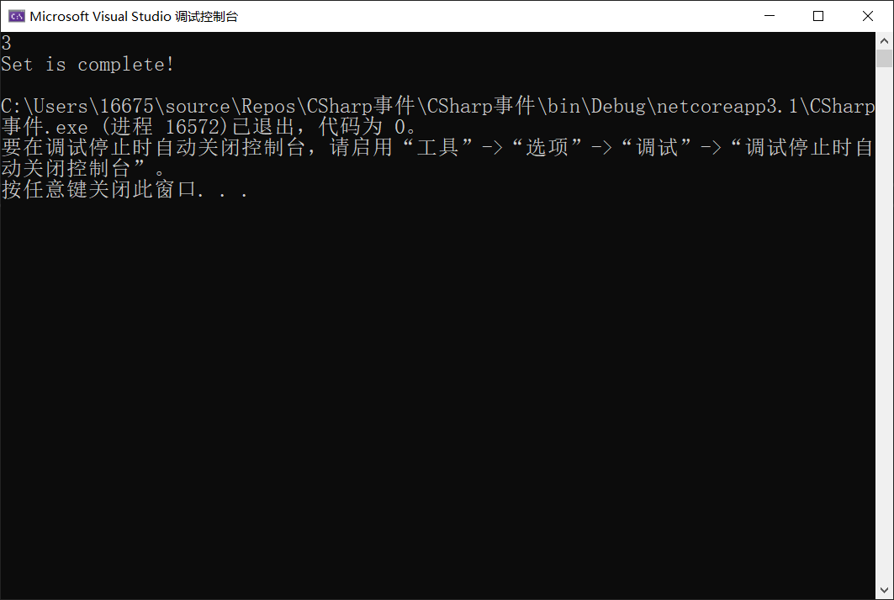
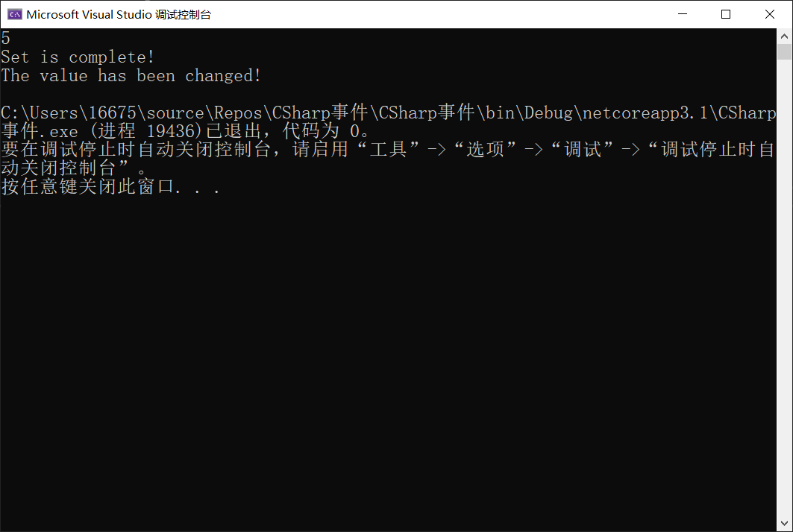

CSharp事件和委托
委托与事件在开发中的应用非常广泛，本文将简单介绍C#中委托和事件的定义、使用方法，以及它们之间的区别和联系。
委托
C#中的委托（delegate）类似于C/C++中的函数指针，是一种存在对某个方法的引用的引用类型变量，所有的委托都派生自System.Delegate类。
委托的声明
声明委托的语法如下：
1 | delegate <return type> <delegate name> <parameter list> |
比方说，我要声明一个无返回值，无参数的委托。
1 | public delegate void MyDelegate(); |
在声明了委托类型后，必须将其实例化才能生效，可以使用new关键字创建并传入参数（参数为一个特定的方法名）。
1 | MyDelegate myDelegate = new MyDelegate(Func1); |
以上实例中我们实例化了一个带有Func1方法引用的MyDelegate类型变量，并将其赋值给了myDlegate实例。
委托的调用
如果想让委托调用它所引用的方法，可以直接仿照方法调用的写法。
1 | myDelegate(); |
多播委托
其实一个委托类型的变量可以同时包含多个方法的引用，如果要在委托实例化后对方法引用进行增删操作，可以使用+=或-=运算符。
例如我们要给myDelegate添加Func2和Func3方法并删除对Func1方法的引用。
1 | myDelegate += Func2; |
预定义委托
在.NET Framework 3.5以来，提供了很多的泛型委托，原先需要手动定义的现在可以直接使用了。
Action委托
Action委托代表返回为空的委托，以下示例实例化一个Action委托，并引用Plus方法。
1 | public void Plus(int a,int b){ |
泛型类型指定为方法的参数类型，最多可指定16个。
Func委托
Func委托代表返回值非空的委托，以下实例化一个Func委托，并引用ConnectString方法。
1 | public string ConnectString(string s1,string s2){ |
最后一位泛型类型指定方法的返回值类型，前面各类型指定方法参数类型，同样最多指定16个。
事件
事件（Event）可以理解为一种封装好的委托，用于程序对用户的某些操作进行响应。事件在类内声明，通过使用同一个类或其他类中的委托与事件处理程序相关联。
通过委托创建事件
事件的声明
事件声明方法与实例化委托很类似，不同之处在于需要在委托类型前加上event关键字。
1 | public delegate void MyDelegate(); |
与委托变量的区别
事件只能作为类的成员变量
1
2
3
4
5
6
7class DelegateClass{
public delegate void MyDelegate();
public event MyDelegate myEvent1; //编译通过
static void Main(string[] args){
event MyDelegate myEvent2; //编译出错
}
}事件只能在类内调用
1
2
3
4
5
6
7
8
9
10
11
12
13public delegate void MyDelegate();
class DelegateClass{
public event MyDelegate myEvent;
public void EventFunc(){
myEvent(); //编译通过
}
}
class Test{
static void Main(string[] args){
DelegateClass delegateClass = new DelegateClass();
delegateClass.myEvent(); //编译出错
}
}
发布-订阅模式
事件使用发布-订阅（publisher-subscriber）模型，在这个模型中，发布器（publisher）为包含事件的类，订阅器（subscriber）为接收事件的类，调度中心（Topic）为事件。
以下通过一个简单的案例来更好的理解这种模式。
1 | using System; |
当输入的值为3（与初始化value值相同），输出结果如下：

当输入值为5（与初始化value值不同），输出结果如下：

 微信
微信 支付宝
支付宝